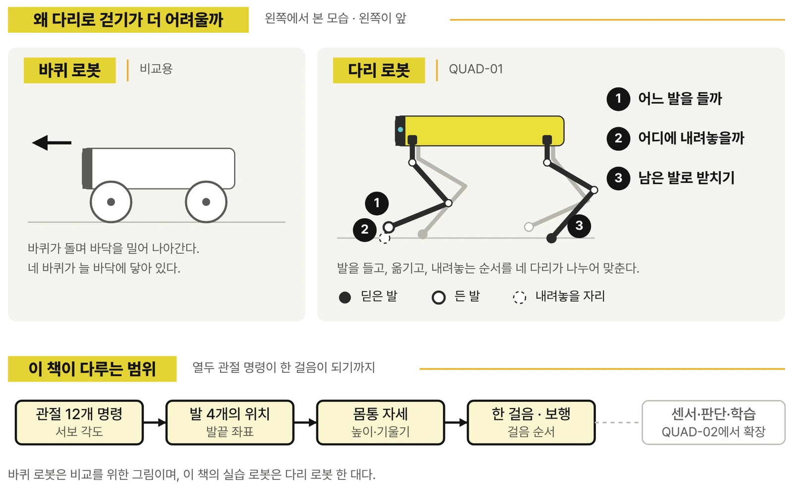

SAMPLE · 본문 미리보기
바퀴 대신
다리로 걷는다는 것
프롤로그와 CHAPTER 01 앞부분 일부를 옮겼습니다.
프롤로그
바퀴 대신 다리로 걷는다는 것
바퀴 로봇은 바퀴가 바닥을 밀어 이동합니다. 다리 로봇은 발을 들어 다른 곳에 내려놓는 동작까지 맞추어야 합니다. 어느 발을 먼저 들고, 들어 올린 발은 어디에 내려놓으며, 그동안 남은 발은 몸통을 어떻게 받칠까요? 이 질문은 로봇이 실제로 걸어가는 모습을 보면 자연스럽게 떠오릅니다.

완성된 QUAD-01을 불러오고 W 키를 누르면 몸통이 앞으로 나아갑니다. 키에서 손을 떼면 보행을 멈추고 기본 자세로 돌아갑니다. 첫 장에서는 이 경험만으로 충분합니다. 로봇의 네 발을 따라가고, 몸통이 움직이는 모습을 눈으로 봅니다. 예상과 다른 움직임이 나오더라도 당장 공식을 찾거나 기록표를 채울 필요는 없습니다.
조금 뒤에는 ACTION 모델로 바꾸어 서서 인사, 앉아서 손 흔들기, 다리 스트레칭을 실행합니다. 로봇이 걷기만 하는 물체가 아니라 관절을 조합하여 다양한 자세를 만드는 장치라는 점이 드러납니다.
PART 1 · EXPERIENCE
CHAPTER 01. 네 다리 로봇을 첫걸음부터 걷게 하기
1.2 일어서기·전진·정지 실행하기
W를 짧게 누릅니다. 로봇이 몸을 지탱한 채 앞으로 움직이기 시작합니다. 처음에는 조금만 누르고 손을 뗍니다. 키에서 손을 떼면 걸음을 멈추고 기본 자세로 돌아갑니다. 다시 W를 누르면 그 자리에서 앞으로 걷기 시작합니다.
이번에는 X를 한 번 누릅니다. WALK의 X는 정지 자세를 만드는 키입니다. Z를 누르면 몸을 낮춘 이완 자세가 됩니다. X와 Z를 번갈아 누르면서 서 있는 모습이 어떻게 달라지는지만 살펴봅니다.
| 키 | 화면에서 일어나는 일 | 누르는 방법 |
|---|---|---|
| W | 앞으로 걷기 | 누르고 있는 동안 |
| X | 안정된 정지 자세 | 한 번 누르기 |
| Z | 몸을 낮추는 이완 자세 | 한 번 누르기 |
| 0 | 이완 자세를 거쳐 WALK 스크립트 종료 | 끝낼 때 한 번 누르기 |
1.3 발이 움직이고 몸통이 따라가는 모습 보기
로봇이 앞으로 나아갈 때 네 발이 동시에 들리지는 않습니다. 어느 발은 바닥을 딛고 있고, 다른 발은 들어 올려 앞으로 옮깁니다. 카메라를 옆으로 돌려 조금 확대하면 발이 바닥에서 떨어지는 순간과 다시 내려오는 순간이 보입니다. 지금은 키 하나로 네 발이 함께 움직인다는 경험이 남으면 충분합니다.
지면 미리보기
실제 책 지면 일부를 이미지로 확인할 수 있습니다.
CHAPTER 01의 실행 장면은 WALK 영상에서 볼 수 있습니다. 어느 발이 언제 들리는지, 그 순서를 어떻게 바꾸는지는 책의 PART 2와 PART 5에서 이어집니다.